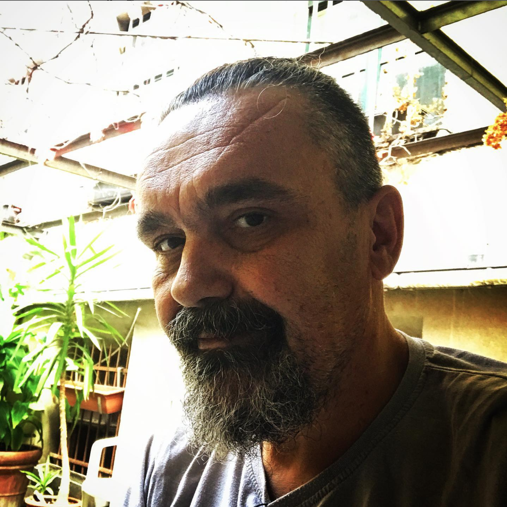

Hi! I am Igor Fabris. A software engineer and web designer based in Berlin.
I help businesses and companies reach their goals by designing user-centric Web Sites & interactive experiences.

Hi! I am Igor Fabris. A software engineer and web designer based in Berlin.
I help businesses and companies reach their goals by designing user-centric Web Sites & interactive experiences.
I'm Igor Fabris. I am located in Berlin. For 35 years I worked in the entertainment industry in the field of graphic design, audio and video production. I have been awarded many times for my work at the world level. I decided to change my profession during the Covid situation when my industry lost its job completely. As a former programmer (20 years and more ago) I decided to dive into water programmers again and now I’m here. In addition to Web pages, I also produce content that should appear on them. I have extensive experience in the production of audio and video content and graphic design. As a former owner of one of the largest multimedia companies in Croatia, I gained extensive experience in teamwork and learned how to be part of a good team. I am a good collaborator but I have my own opinion and knowledge that supports it. I always follow the latest trends and try to be up-to-date with everything that is happening in the industry. I am available at work 0-24 24/7 if needed. I am a big fan of books in any form. I spend my free time with my family, I walk at least 15 km every day or I go on long bike rides.
It's simple. I am a one stop solution for web design and website programming including audio and video content. Give me an idea or a vision and sleep well. The rest is on me. Fast and accurate communication, problem-solving ability and more. I am also a video editor, 3D composer and audio engineer. I prefer remote work and freelancing, but I know how to be part of a team. Impossible does not exist in my dictionary ...
CSS coding, fast learning, quick adaptation to new tasks and I listen carefully to what is being said to me. After Java Script I plan to master PHP and Rust.
Music composing, arranging, and producing, vocal recording and editing motion graphic design video design, graphic design, video editing. Specialised in podcast production. Software compatibility: Audio: Steinberg Nuendo, Ableton Live, Logic Pro X, Pro Tools (verified knowledge for all) Video: Abobe After Effects (verified knowledge), Grass Walley Edius, Maxxon Cinema 4D, Blender. Desktop graphics: Adobe Photoshop, , Affinity Photo and Designer, Gimp.